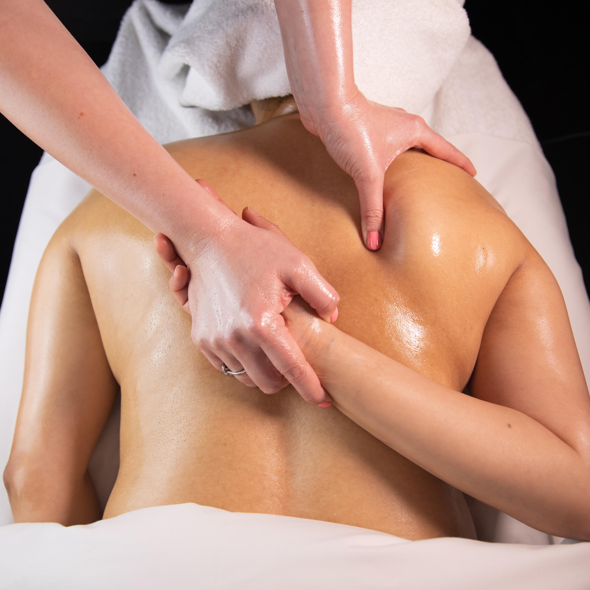
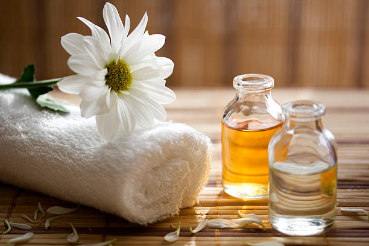
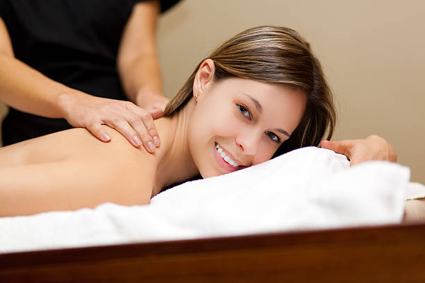
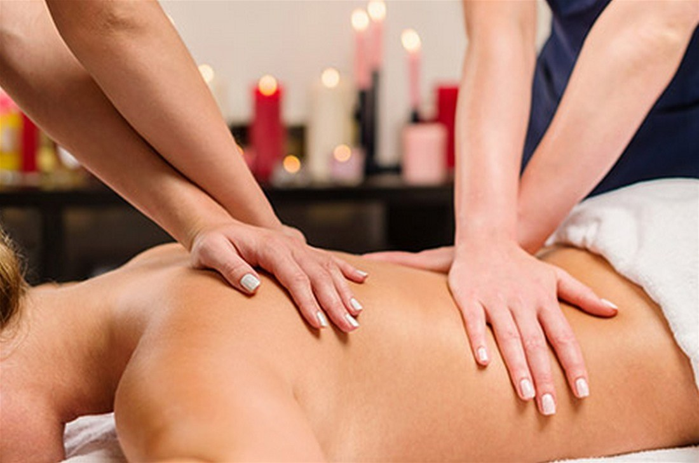
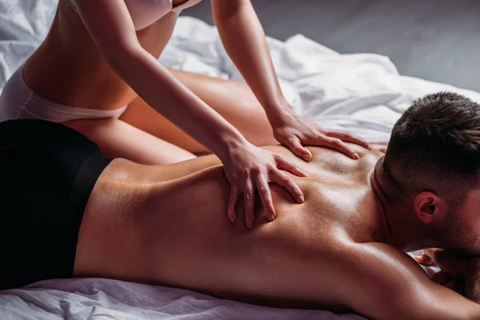
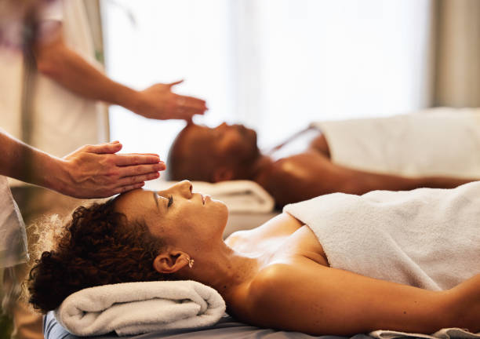
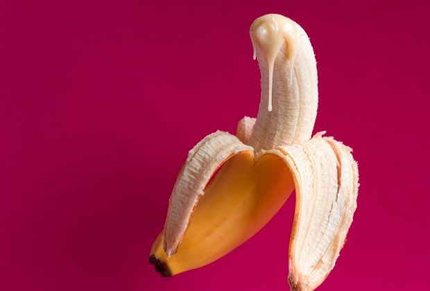
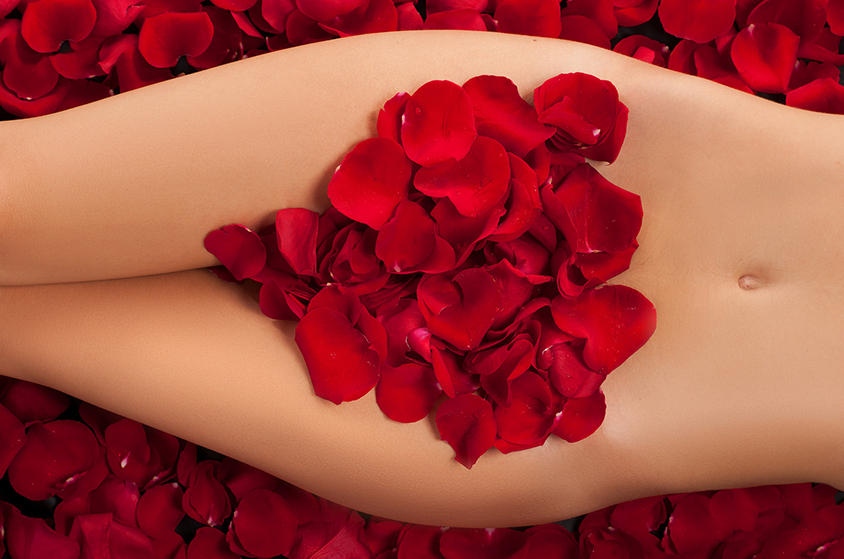

1. DEEP TISSUE MASSAGE
Deep Tissue massage is a therapeutic technique that targets the inner layers of muscle and its surrounding connective tissue known as fascia. Using firm pressure and slow, deep strokes, your massage therapist works to break up scar tissue and release muscle adhesions, or knots. These knots are bands of rigid muscles that negatively impact your circulation and cause pain and inflammation. Deep tissue can relieve the built-up tension from stress, exercise, and prolonged postural problems.
Duration: 60 - 90 minutes
Price ₦37.000.00
2. AROMATHERAPY MASSAGE
An aromatherapy massage is a method of massage therapy that incorporates essential oils into the system of kneading muscles and soft tissues of the body to help relieve medical conditions, injuries or to preserve wellness. Some of the notable benefits of the aromatherapy massage include pain management, control of inflammation, improved mood, emotional healing, and boosting health
Duration: 60 - 90 minutes
Price ₦0000
3. SWEDISH MASSAGE
Swedish massage was developed in the 19th century as a comprehensive system of therapy aimed at improving circulation, relieve muscular tension and promote relaxation. Swedish massage involves both passive and active movements of joints as well as both firm and light pressure. The varying pressure used differs it from other forms of massage. Swedish massage works to improve blood flow, reduce tension in muscles, and enhance the flexibility of muscles and joints. At Flip Massage, our massage therapists use Swedish massage therapy to treat a number of specific conditions, as well as to promote overall well-being.
Duration: 60 - 90 minutes
Price ₦0000
4. FOUR HAND MASSAGE || KING MASSAGE THERAPY
4-Hand Massage represents a unique type of massage in which two therapists massage you simultaneously. During the 4-hand massage experience, two therapists synchronize their movements to create an extraordinary massage experience with deep relaxation and tension relief. With the four hands working in unison, this body massage brings numerous benefits to the body and mind. If you are searching for a way to enhance your wellness experience, it is time to try the four-hand massage known as king massage. And yes, this sounds like you get two full-body massages in one, and it is worth trying. Generally, a four hands massage is considered a premium service due to the benefits you get and the fact that massage involves two experienced and good massage therapists.
Duration: 60 - 90 minutes
Price ₦0000
5. SENSUAL/ EROTIC MASSAGE
The sense of touch is extremely important for sexuality. The Sensual massage is a way to incorporate the sense of touch into massage activity. Beyond the sexual aspects, sensual massage also provides health benefits. Several techniques can be used in sensual massage. Some of the most popular are the fan stroke, circle strokes and stretching strokes. Generally, a sensual massage will begin with softer stroke variants to soothe and relax the recipient and move into stronger or harder techniques as the massage progresses. Sensual massage is healthy as well as sexy, and the physical effects become part of the experience. Sensual massage boosts blood flow all across the body, It also reduces the levels of cortisol, the stress hormone in the body and increases oxytocin, a hormone involved with feelings of affection and bonding. Regular massage can also lead to improved immune function and better general health overall. The sensual massage comes with lingam massage.
Duration: 60 - 90 minutes
Price ₦45,000
6. COUPLE MASSAGE
A couples massage is a massage given to two people in the same room at the same time. It allows both partners to experience relaxation and stress relief together. Couples massages are typically performed by two therapists working simultaneously in the same room. The couples massage may begin with some gentle stretching and aromatherapy, followed by a massage with the desired pressure and style. Couples massages are an excellent way for partners to relax and reconnect. It can also be a great bonding experience for friends or family members who want to enjoy a relaxing spa day.
Duration: 60 - 90 minutes
Price ₦0000
7. LINGAM MASSAGE
The lingam massage is a type of tantric massage that primarily focuses on the male genitalia. It is the male equivalent of a Yoni massage. Tantric practices aren't purely about sex. Instead, tantric massage therapy involves learning how to build up sexual energy to experience the pure feeling of pleasure. Lingam massage, derived from the sanskrit word for “penis” is a type of tantric practice that involves massaging the penis and the areas around it. During a lingam massage, the body parts that get massaged are the: penis, testicles, perineum (area between the penis and scrotum) and the prostate. The goal of lingam massage isn't only to reach orgasm, the ultimate intent is to experience full-body sexual and spiritual pleasure.
Duration: 60 - 90 minutes
Price ₦40,000
8. NURU MASSAGE
Nuru massage is an sexual, body-to-body massage method that blends friction and sensual methods to produce a slippery, seductive experience. It is created to leave you feeling unwinded, refreshed and naturally excited. Unlike most other body work, with nuru, which directly translates to “slippery”, everyone is completely nude and covered in an ultra-slippery gel or oil and then the masseuse (or both partners) uses their entire body to rub, stroke, and grind against their partner. Nuru massage offers all the advantages of a traditional massage, plus a lot more. It is developed to stimulate the skin and get your blood flowing. This makes it perfect for both relaxation and arousal. The sensations associated with a nuru massage are intense, both mentally and physically. The nuru massage helps with stress relief, encourages blood circulation and create a deeper intimacy. The lingam massage is a technique that is offered as part of the nuru massage session.
Duration: 60 - 90 minutes
Price ₦50,000

9. BACK MASSAGE
A back massage generally refers to the area between your shoulders and your waist. Issues that usually involve the lower back include pain, stiffness or problems affecting the sciatic nerve down into the legs. In the upper back the problems are most oftenbetween the shoulders blades and up towards the neck. Also, muscles running alongside the spine, from the pelvis to the upper back, often become shortened and tense.
Duration: 60 - 90 minutes
Price ₦25,000

10. YONI MASSAGE
A yoni massage is first and foremost facilitated to help the receiver connect to her emotional body, sensuality and sexuality more deeply and comfortably in the caring hands of the practitioner. Often, women who receive this treatment are experiencing these aspects of themselves in a safe space for the first time ever. Yoni massage is a practice for helping women regain comfort and sensitivity in their vulvas and vaginas. The specialized massage techniques are effective in releasing tightness, soreness, reactive contractions, numbness and pain from throughout the vulva and vagina. A yoni massage is also helpful for women experiencing physical discomfort, numbness or pain related to vaginismus or orgasmic anhedonia. Other benefits of receiving yoni massage include greater stress and anxiety relief, more calm and comfort in social settings including in the dating world and even discovery of new pleasure points in the female sexual anatomy. Imagine discovering more pleasure than you even knew you were capable of experiencing.
Duration: 60 - 90 minutes
Price ₦40,000
11. FOOT MASSAGE
Foot reflexology is a form of massage therapy that involves applying pressure to specific points on the foot. It is designed to reduce pain and improve overall health. If your feet are aching after a long day, a foot massage can give you much-needed relief. Just like your neck, back, and shoulders, your feet can also benefit from a regular rubdown. Foot massage improves circulation, stimulates muscles, reduces tension, and often eases pain. It also gives you a chance to check out your feet so you can get a jump on treating blisters, bunions, corns, and toenail problems.
Duration: 60 - 90 minutes
Price ₦20,000

12. SOAPY MASSAGE
The soapy massage is basically a body to body massage. It involves the masseuse taking a bath with the client. After that the client lies down on a air mattress and lathered with soap. Some benefits of the soapy massage is; It helps in increasing nutrition to the cells, circulation of blood in the skin and improving cell regeneration, also helps to reduce the stress and anxiousness by relaxing the body and mind. It increases the excretion of sweat from sweat glands which further helps in excreting urea and waste products from within the skin. Most importantly it smoothens the skin and improves the skin color. Soapy massage can be on a bathtub or anything that won't skid after soaping
Duration: 60 - 90 minute